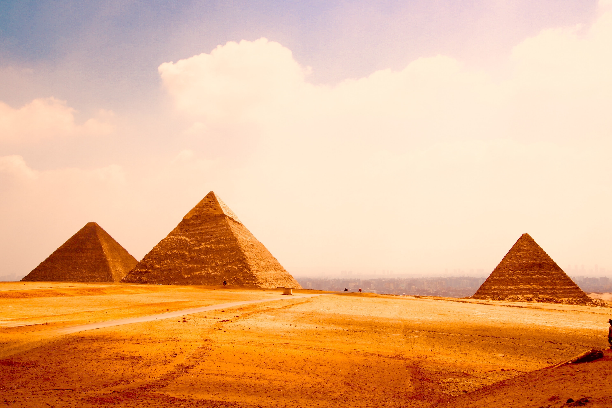

Egyptian pyramids are ancient pyramid-shaped masonry structures located in Egypt. As of November 2008, sources cite either 118 or 138 as the number of identified Egyptian pyramids. Most were built as tombs for the country's pharaohs and their consorts during the Old and Middle Kingdom periods.The earliest known Egyptian pyramids are found at Saqqara, northwest of Memphis, although at least one step-pyramid-like structure has been found at Saqqara, dating to the 1st Dynasty: Mastaba 3808, which has been attributed to the reign of Pharaoh Anedjib, with inscriptions, and other archaeological remains of the period, suggesting there may have been others. the otherwise earliest among these is the Pyramid of Djoser built c. 2630–2610 BC during the Third Dynasty. This pyramid and its surrounding complex are generally considered to be the world's oldest monumental structures constructed of dressed masonry. The most famous Egyptian pyramids are those found at Giza, on the outskirts of Cairo. Several of the Giza pyramids are counted among the largest structures ever built. The Pyramid of Khufu at Giza is the largest Egyptian pyramid. It is the only one of the Seven Wonders of the Ancient World still in existence. here are three known chambers inside the Great Pyramid. The lowest chamber is cut into the bedrock upon which the pyramid was built and was unfinished. The so-called Queen's Chamber and King's Chamber are higher up within the pyramid structure. The main part of the Giza complex is a set of buildings that included two mortuary temples in honour of Khufu (one close to the pyramid and one near the Nile), three smaller pyramids for Khufu's wives, an even smaller "satellite" pyramid, a raised causeway connecting the two temples, and small mastaba tombs for nobles surrounding the pyramid.
